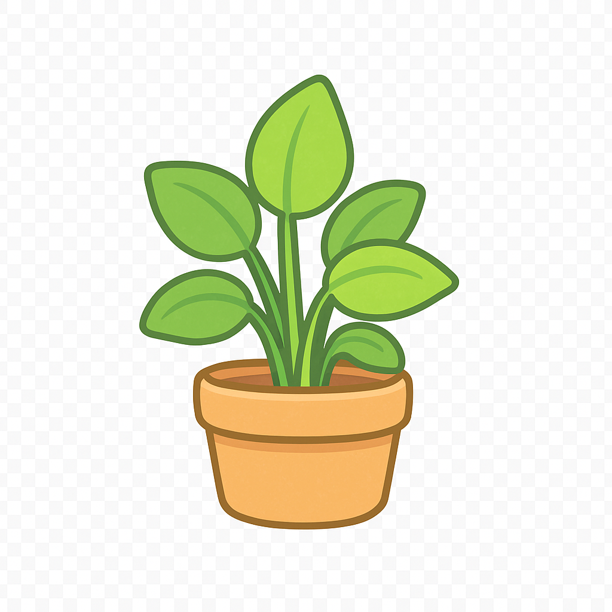

관계의 모든 것
나는 가스라이팅을 ‘하고 있을’ 가능성은?
가스라이팅이란? 상대의 감정·기억·판단을 “네가 잘못 느낀 거야”처럼 교묘히 흔들어
스스로를 의심하게 만드는 심리적 통제예요.
이 테스트는 ‘내가 무심코 그런 패턴을 쓰고 있지는 않은지’를 돌아보도록 돕습니다.
정답은 없고, 배움만 있어요. 결과는 비난이 아니라 대화 습관을 조정하는 힌트로 사용해주세요. ☁️
문항 1 / 15
질문이 들어갑니다.
가스라이팅 성향 지수
높을수록 ‘상대의 감정·기억을 교정/무효화’하려는 경향이 강한 상태예요.